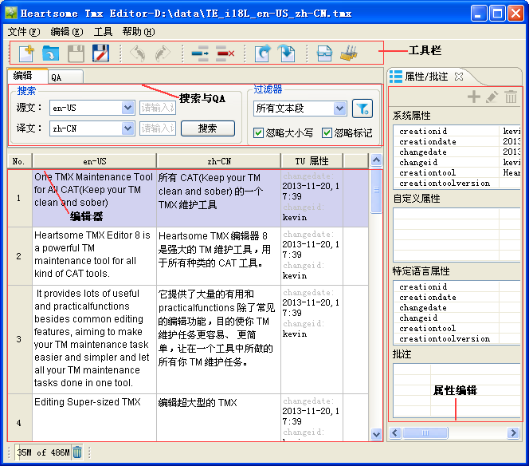
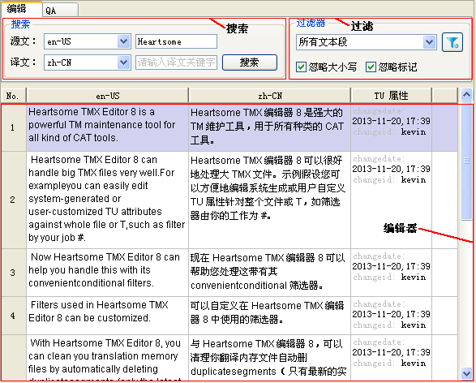
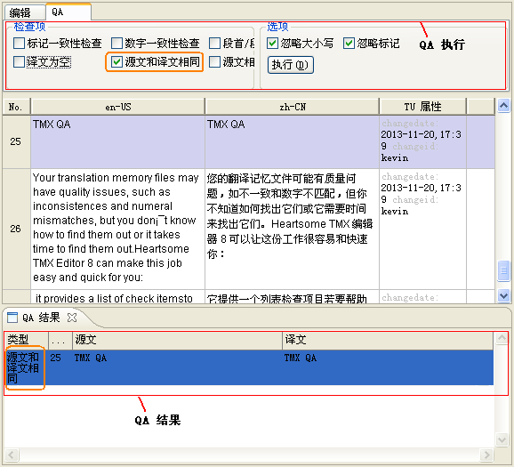
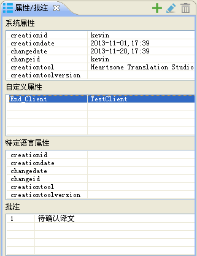
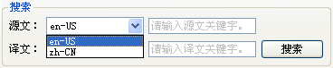
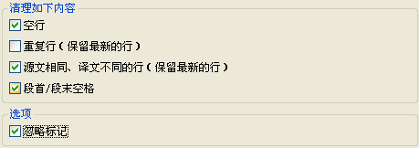

以下是 Heartsome TMX Editor 8 快速入门和常规配置的介绍：
-
1、通过菜单“文件”-“打开 TMX”，在弹出的对话框中选择 TMX 文件。
2、在编辑器中打开 TMX 文件后，单击任一单元格即可进行编辑。
3、每选中一行，右边的“属性编辑”视图都将刷新当前行的属性，您可以通过双击或单击【添加】【编辑】【删除】按钮对所有属性进行操作。
4、TMX 内容编辑后，需要手动点击菜单栏的按钮，或使用快捷键 CTRL+S 进行保存操作，让最终编辑结果生效。但即使没有手动保存，编辑结果也不会丢失，因为我们进行了缓存。
5、属性的编辑及时生效，无需手动保存。
-
快速编辑 Heartsome Translation Studio 8 记忆库
1、通过菜单“文件”-“连接记忆库”，选择记忆库类型进行连接打开。
2、如果选择“文件型记忆库”，那么直接选择计算机上的记忆库打开即可；如果选择“服务型记忆库”，需要根据记忆库的类型填写好服务器相关参数，如：IP地址、端口、用户、密码等，在查询的结果列表中选择您想要编辑的记忆库即可。
3、对于内容和属性的编辑与 TMX 编辑方法相同。
4、Heartsome Translation Studio 8 记忆库的编辑为实时保存，无需手动操作。
-
自动更新：软件根据您的设置，定期连接服务器检查是否有版本更新。
-
界面语言：软件提供了英文和简体中文两种界面语言供选择。
-
用户名：用户名将默认作为 TMX 翻译单元的 changeid 存入记忆库。
-
工具栏：这里是常用的一些功能快捷方式，您也可以通过相应的快捷键来执行相关功能。
-
搜索与 QA：这里提供关键字搜索以及 TMX 文件的 QA 执行，以两个 TAB 来切换显示。
-
编辑器：是软件的主编辑区，主要进行源文和译文的编辑以及关键属性的显示。
-
属性编辑：这里可编辑翻译单元的所有属性。
-
搜索：提供语言对的切换和关键字的搜索。
-
过滤器：提供快速过滤和自定义过滤。
-
编辑器：编译 TMX 文件的源文和译文。
我们这里介绍如何快速编辑一个 TMX 文件和 Heartsome Translation Studio 8 记忆库。
系统参数里您可以设置自动更新的频率、软件界面语言、软件界面字体以及当前用户名。
您可以在这里为软件的所有功能设置您想要绑定的快捷键。如果您需要修改某一个功能的快捷键：
1、点击该功能对应的快捷键单元格，此时会进入编辑状态。
2、在键盘按下所需组合快捷键。
3、点击界面其他地方，自动退出编辑状态。
4、重要的一步：点击【应用】按钮，或【确定】按钮进行保存。
5、如果设置的快捷键与其他功能设置有冲突，系统会以红色背景标示出有冲突两个功能。
网络连接为您提供使用代理服务器连接 Internet。您可以根据您的实际情况设置代理服务器的配置方式：
Heartsome TMX Editor 8 包含以下视图：

您可以通过菜单“工具”-“选项”-“系统”，找到“界面语言”设置选项来更改视图语言。
编辑视图分“搜索过滤”和“编辑器”两个视图区域。在搜索过滤区域中，您可以切换语言对（如果是多语言），可以搜索关键字，也可以根据内置的快速过滤条件过滤您关心的内容，同时还提供了更加灵活强大的自定义组合条件。
 特别说明：“搜索”与“过滤器”之间没有互相关联，任何一个条件改变都会以原始 TMX
文件内容或记忆库内容重新刷新结果。
特别说明：“搜索”与“过滤器”之间没有互相关联，任何一个条件改变都会以原始 TMX
文件内容或记忆库内容重新刷新结果。

QA 视图分“QA 执行”和 “QA 结果显示”两个区域视图。双击 QA 结果可定位到编辑器中的相关行。

属性编辑视图中您可以编辑翻译单元固定属性、翻译单元自定义属性、翻译单元变量属性和翻译单元批注。四种属性分别置于四个不同的表格中显示和操作。

1、通过菜单“文件”-“新建 TMX 文件”或点击工具栏 按钮或使用快捷键 Ctrl+N，打开新建 TMX 文件的操作对话框
按钮或使用快捷键 Ctrl+N，打开新建 TMX 文件的操作对话框
2、选择“保存位置”，设置该 TMX 文件的“源语言”和“目标语言”，单击【确定】按钮，完成 TMX 文件的创建
3、创建成功后，软件默认打开该空 TMX 文件，进入编辑状态
Heartsome TMX Editor 8 支持多语言的 TMX 文件，您可以随时切换语言对进行显示和编辑操作。
1、打开多语言的 TMX 文件。
2、如关于编辑视图的介绍中，在搜索区域对“源”和“目标”进行语言对的选择。

3、点击【搜索】按钮，即可显示当前语言对内容。
-
单击编辑器中源文单元格或译文单元格即可进入编辑模式，编辑完成后需要注意2个操作：
-
编辑完成后，点击其他位置，软件会自动缓存该内容，但并未保存到原始 TMX 文件中（Heartsome Translation Studio 8 记忆库除外），但数据已缓存，不会因意外事故而丢失。
-
编辑完成后，点击或快捷键Ctrl+S才能使修改内容及时保存到原始 TMX 文件。
-
-
翻译单元属性的编辑均提供了“当前选中行”、“所有过滤结果”以及“整个 TMX /记忆库”三个应用范围，以实现批量操作。以下是具体说明：
-
 特别说明：固定属性只允许编辑和删除，且编辑和删除均只针对固定属性的值。
特别说明：固定属性只允许编辑和删除，且编辑和删除均只针对固定属性的值。
1、编辑固定属性值：选中要编辑的属性行，单击
 按钮，在弹出的对话框中输入属性值，点击【确定】完成编辑。
按钮，在弹出的对话框中输入属性值，点击【确定】完成编辑。2、删除固定属性值：选中要删除的属性行，单击按钮，即可完成属性值的删除。
-
编辑翻译单元自定义属性
特别说明：自定义属性允许添加、编辑和删除属性名称和属性值。
1、添加自定义属性：选中“翻译单元自定义属性”表格中的任一一行，点击按钮，在弹出的对话框中输入“自定义属性名称”和“自定义属性内容”，单击【确定】完成添加操作。
2、编辑自定义属性：选中“翻译单元自定义属性”表格中需要编辑的行，点击
按钮，在弹出的对话框中编辑“自定义属性名称”和“自定义属性内容”，单击【确定】完成编辑操作。3、删除自定义属性：选中“翻译单元自定义属性”表格中需要删除的行，点击按钮，即可完成删除操作。
-
编辑翻译单元变量属性
操作方式同：编辑翻译单元固定属性
-
-
1、添加批注：选中“批注”表格中的任一一行，点击按钮，在弹出的对话框中输入批注内容，单击【确定】完成添加操作。
2、编辑批注：选中“批注”表格中需要编辑的行，点击
按钮，在弹出的对话框中编辑批注内容，单击【确定】完成编辑操作。3、删除批注：选中“批注”表格中需要删除的行，点击按钮，即可完成删除操作。
-
分割 TMX
1、菜单“编辑”-“分割 TMX ”，打开分割对话框。
2、选择需要分割成的“子文件”个数。
3、选择需要分割的原 TMX 文件。
4、选择存储方式：“原文件路径”将分割后的子文件与原文件放置在一个目录；“另存为”则会将子文件放置在此指定的目录。
-
合并 TMX
1、菜单“编辑”-“合并 TMX”，打开分割对话框。
2、点击【添加】按钮，将需要合并的子文件添加到列表。
3、选择合并的 TMX 存储路径。
4、点击【确定】按钮，执行合并操作。
-
删除空行：指删除译文为空的翻译单元
-
删除重复行，保留最新文本段：指删除源文和译文均相同的翻译单元，但保留时间最近的一个
-
删除相同源文不同译文行，保留最新文本段：只删除源文相同但译文不同的翻译单元，但保留时间最近的一个
-
删除段首/段末空格：只删除翻译单元首位的空格
分割和合并 TMX 功能，为您提供了多人合作编辑文件的方式。
此功能提供批量更改 TMX 文件中每一个翻译单元的语言代码。
1、菜单“编辑”-“更改语言代码”，打开更改语言代码的对话框。
2、对应源语言和目标语言，选择更改后的语言对。
3、点击【确定】按钮，完成批量修改。
此功能提供批量删除 TMX 文件中某一种语言的翻译单元变量（tuv）的功能。需要注意是的：不能删除源语言。
1、菜单“编辑”-“删除指定语言”，打开删除指定语言对话框。
2、选择需要删除的某一种或多种语言。
3、点击【确定】按钮，完成删除操作。
此功能提供批量清除 TMX 文件中的所有内容标记，保留纯文本功能。
1、菜单“编辑”-“清除所有标记”，弹出提示框。
2、确认提示后，执行清除操作。清除后将无法恢复。
TMX 文件的无用内容包含：空行、重复行、相同源文不同译文行等。Heartsome TMX Editor 8 提供了批量清理这些无用内容的功能。
1、菜单“编辑”-“清理 TM”，打开批量清理的对话框。
2、在对话框里选择需要清理的无用项：

3、选择比较源文是否相同时，是否需要忽略标记。
4、执行清理操作。